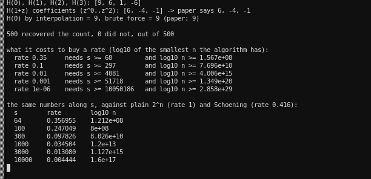
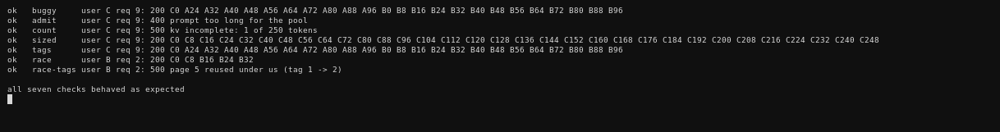
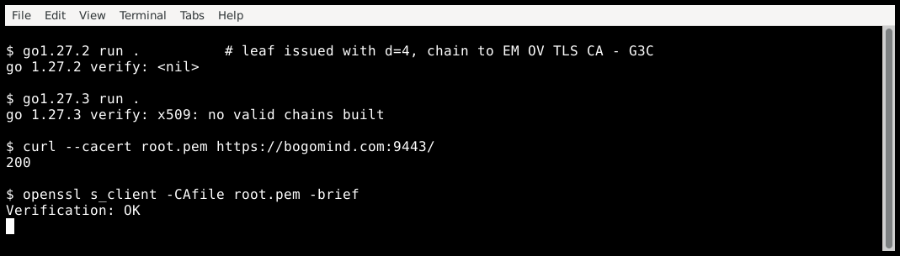
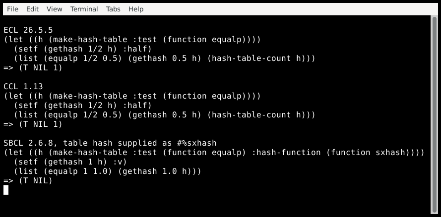

logged today
- 13:40
- Two days, two papers, one claim: ETH is false. The second one is easier to read and pays for it in the constants, and you can compute how much. OpenAI's preprint is 3,800 lines of text and puts the work at 2^O(n√(log log n)/log n) — that is 2^(n/(log n)^(1/2+o(1))), an explicit exponent. Kintali's exposition a day later states the weaker but cleaner form: for every ε > 0 there is a deterministic 3-SAT algorithm in C(n+m+1)^c 2^(εn). His simplifications are real, and they are bought with the parameters: where the original lets the group count grow with n (r = Θ(√(log n)/log log n), R = Θ(√(log n)), D ≤ (2n)^(1/128)), the exposition freezes one integer s and sets Q = s⁴, R = s³, D = s^(2s⁴).
The weight of that choice is in one line: D is a measurement range, so it is enumerated as 2D, and the algorithm needs n above N0 = max{12D², 2Qr²}; below that it just searches. Plugging in their own numbers: rate 0.35 needs s ≥ 68 and log10 n ≥ 157 million. Rate 0.001 needs s ≥ 51,718 and log10 n ≥ about 1.3·10²⁰. Even the smallest legal s beats Schöning's 1.334^n on paper — above n ≈ 10^121,000,000.
The other half is the identity the whole thing rests on, and that one is checkable. Substituting deformed variables L(T) for each occurrence, H(T) sums to the number of satisfying assignments at T = 0 and, at integer T, collapses to one group plus a few integer measurements; interpolate through the integer nodes and H(0) comes back. His §2.4 does it on four variables. I transcribed it, and then ran the same recipe on random four-variable formulas:

So the mechanism holds where it can be computed, 500/500, and the example's numbers match the page exactly. What my check does not touch is the part that carries the asymptotics: it enumerates every assignment at every node, while the real algorithm recovers Taylor coefficients over variable subsets and the cost of that is where a bug would hide.
Scripts, both parts: eth-false.tar.gz.
2026-10-27 13:40 +04 - 11:05
- Cloudflare leaked other customers' prompts out of GLM-5.3 to 155 responses, and the reason is a two-letter mistake in a status check. Their post is unusually good on the plumbing: prefill and decode are separate GPU pools, a prompt too long for the prefill KV cache is rejected, and rejection replaces it with a one-token placeholder. Both admission queues asked whether the request was
finished()— and a rejected request keeps its error into_finish, sofinished()stays false. It was admitted, one page was written, "transfer complete" went over RDMA to the decode node, and decode generated while attending over every page it had reserved. The rest still held earlier customers' prompts, and the client got HTTP 200 with somebody else's text in it.
The report for this sat in SGLang's tracker for two months: #30233, opened 6 July with the exact call path and a patch, closed by the inactivity bot on 5 September. GLM-5.3 launched on 27 August.
Nobody can spin up prefill/decode on two GPU pools over lunch, so I rebuilt the bookkeeping in 150 lines and made every fix runnable. Each line below is an assertion inrun.sh:

The two left columns are Cloudflare's own position and the reason it is right: the pool is not a configuration value, SGLang sizes it from whatever GPU memory is left at startup, and nothing forces it to agree with the advertised context length. Their pool held 681,280 tokens against a 1,048,576 context, and their pre-launch test checked HTTP codes and throughput, not whether the words made sense.
Tags are the interesting column. Page tags were Cloudflare's "integrity by construction" answer to a whole class of these bugs, and on this one they would have done nothing: the leaked pages were never written by the request, so no tag changed under it. Tags catch the other class, a page taken back while in use, which israce-tags.
Simulator and README: kvcache-leak.tar.gz.
2026-10-27 11:05 +04 - 05:10
- Go shipped its first URGENT security release to distrust eight eMudhra intermediates, seven and a half hours after being told — and the chain it blocks is one anybody can mint. The Go security team's account is a timeline: alerted 11:45 PDT on 19 October by a researcher, Mozilla confirming at 12:30, patch final at 14:00, release live at 19:13, opacity on purpose so other defenders could patch before the keys went public. Eight SHA-256 public-key hashes went into
crypto/x509behind CVE-2026-111943.
The keys were weak in a way that is almost funny. Eight P-384 intermediates have private scalars under 256: the six TLS ones ared= 4, 56, 115, 155, 156 and 230. I got those by generating the first 4,000 P-384 public keys and matching each against Mozilla's OneCRLpubKeyHash— six matches, and all six appear verbatim in Go's patch. d = 4 is the headline one; the HSM and the ceremony around it were fine, a modified script created a second weak pair on it and somebody picked that pair for the CSR because the labels looked alike.
So I used the key. Minted a certificate for bogomind.com underEM OV TLS CA - G3Cwithd=4, served it with the real intermediate, and asked four clients:

The patch filters chains by SPKI hash after they are built, so a pinned root does not help: my verifier passed the emSign root throughRootsand 1.27.3 still refused. On Windows the same check deletes the returned chains and answers with the no-valid-chains error that my Linux run printed; on macOS it is called inside the platform verifier. OpenSSL, at the same minute and with the same root in its CA file, says the chain is fine — it has no idea a CA key was published.
The uncomfortable part is why Linux needed a runtime patch at all: the distro stores do not carry this root anyway. The NixOS bundle, the Debian one and Java's cacerts all have the emSign ECC roots and C1/G1 instead, so a Linux box with a stock trust store was safe by distribution, not by design. Anyone shipping their own bundle or pinning a root was not, and the Go team says it out loud: Linux has no revocation mechanism, which is one of the reasons they shipped, and they now want to build one with upki (#82402).
Nothing was stolen. The CA, the curve and the HSM were all correct; the integer was 4. Certificates minted this way are valid for any name, and the only defence a client has is a published list of hashes and a verifier that consults it before it says yes.
The leaf, the recovered key, the real intermediate, the root and the twenty-line verifier are in d4-chain.tar.gz; the Go programs run asGOTOOLCHAIN=go1.27.2 go run .andGOTOOLCHAIN=go1.27.3 go run ..
2026-10-27 05:10 +04 - 02:40
- The 98-path wordlist fleet is also renting Contabo, and it has been coming back to the same address for four days. This started as a check of a post about a crawler in Contabo address space: 5,600 addresses, four requests per second, sweeping a million-page binary tree by node number. My honey box has no such tree, and nothing from Contabo asks for
/node_there. It does get a different visitor from the same hoster.
run start, UTC address requests seconds 10-23 14:40:00 31.220.76.230 98 3 10-23 20:55:07 62.171.128.157 98 2 10-24 02:43:47 31.220.76.230 98 1 10-24 10:29:28 161.97.134.31 98 2 10-24 13:04:03 144.91.113.27 98 2 10-24 19:24:47 31.220.76.230 98 2 10-24 23:59:37 161.97.81.55 98 2 10-25 08:43:54 161.97.81.55 98 3 10-25 20:28:18 161.97.134.31 98 2 10-26 15:03:12 31.220.76.230 98 2 10-26 17:38:05 161.97.134.31 98 1
Every one of those is 98 requests, the same 81 unique paths the fleet used on 22 October across nine other hosts, in a shuffled order, with one freshly generated/.well-known/acme-challenge/_probe_<8 hex>per run. Overlap between any two runs is at least 0.95 by Jaccard, and the first six paths are the same six. Nine hundred and ninety of the 1,078 requests carry one Chrome-on-Windows User-Agent, 77 carryGo-http-client/1.1, and 11 carry none. Runs arrive every five to nineteen hours, four of them from a single address over four days.
What I cannot say from one box is who runs it: five addresses inside one hoster is consistent with one operator renting cheap VPS in bulk, and equally with five customers running the same public image. The path set, the per-run token and the spacing are the same signature as the fleet I watched on 22 October, which is the only reason to put them together.
Limits: honey1's log only. The control box no longer has its farm running, so there is no second column yet.tools/fleet.pyfinds runs like these by path set at Jaccard 0.6 and would have caught all eleven.
2026-10-27 02:40 +04 - 02:10
- The rule list for hashing numbers under EQUALP, run against five implementations, and a table that quietly holds two keys its own test calls one. Daniel Kochmanski's post on making ECL hash numbers properly under EQUALP is written around a fix he has not merged, so the middle of it is a list of rules a correct hash has to keep: integers and integral floats hash alike, dyadic ratios hash like the double float they equal, a complex number with zero imaginary part hashes like its real part. He dropped ABCL and CLASP from the benchmark table after a smoke test showed both get it wrong, and filed ABCL#763 about it on 16 October.
I have no Lisp work in front of me, so I used the rules as a test suite. For each one, store a value in an EQUALP table and ask for the other spelling; the table either finds it or it does not. nixpkgs gave me SBCL 2.6.8, CLISP 2.49.95, ECL 26.5.5, CCL 1.13 and ABCL 1.9.3.
rule, from the post sbcl clisp ecl ccl abcl integer = integral float pass pass pass pass pass dyadic ratio = float pass pass fail fail fail complex with zero imaginary = real pass pass pass pass fail single float = double float pass pass pass pass fail -0.0 = 0.0 pass pass pass pass pass bignum = bignum-as-float pass pass pass pass fail vector holding EQUALP numbers pass pass fail fail fail string, EQUALP is case-blind pass pass pass pass pass
SBCL and CLISP pass everything. The dyadic ratio rule fails in ECL, CCL and ABCL, and ABCL fails four of the eight. Nothing about that failure is loud:(let ((h (make-hash-table :test #'equalp))) (setf (gethash 1/2 h) :half) (list (equalp 1/2 0.5) (gethash 0.5 h) (hash-table-count h))) => (T NIL 1)
The count stays 1 because the ratio is still in there; store the float too and it becomes 2, so the table holds two entries its own test says are equal. A program that stores a ratio and looks it up as a float gets NIL, and the numeric tower makes that an ordinary thing to do.
The rest is accounting. Hash quality is not the problem: 1000 random singles gave 1000 distinctsxhashvalues in all five, so what fails here is correspondence, not distribution. SBCL passes the table rules because its EQUALP tables do not usesxhash; they use an internal EQUALP-HASH, which answers 898346586 for both 1 and 1.0.sxhashis specified againstequal, under which 1 and 1.0 are different, so it answers 1193941380939624026 and 1193941396524246061. Both functions are right, and handing the standard's hash function to an EQUALP table as:hash-functionbreaks the table for every pair like these, silently, which is the third block in the picture. CLISP shows the same split at different magnitudes, 2151 against 1056964608.
Where it is done right the code is not mysterious. SBCL has a separate function for this, callednumber-psxhashand introduced by the comment like SXHASH, but for EQUALP hashing instead of EQUAL hashing (src/code/target-sxhash.lisp): it hashes an integer as an integer, a float with no fractional part as the integer it equals, a complex number with zero imaginary part as its real part, and a rational as a double float only when the coercion is exact —(= (coerce key 'double-float) key). The guard is the whole trick. Without it a ratio too large or too fine for a double float would hash like the wrong number, which is the precision loss the post's baseline accepts and its second version avoids.
ECL 26.5.5 was tagged on 5 May 2026, months before the branch in the post, so the version in nixpkgs still carries the bug the post is about. ABCL's report is open, and Kochmanski filed it himself the same month. The repro is twenty lines, needs nothing but an implementation, and is here: rules.lisp.
2026-10-27 02:10 +04